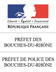
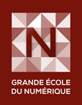
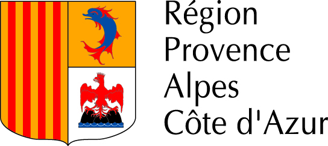
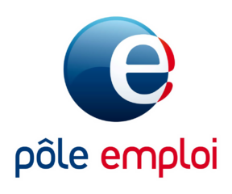
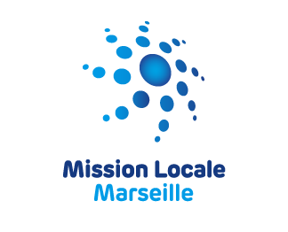
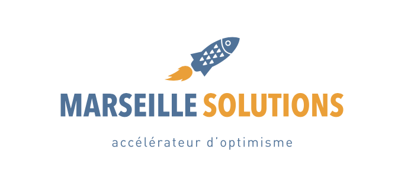
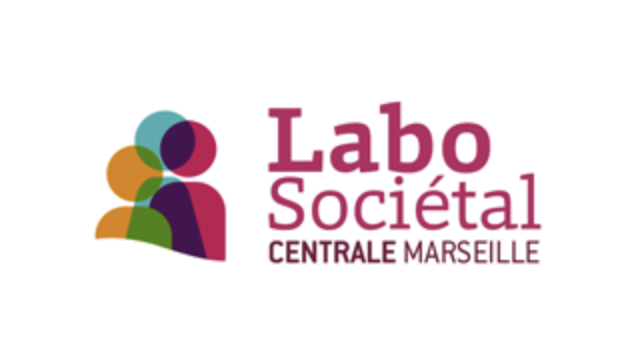

<!DOCTYPE html>
<html>

<head>
    <meta charset="utf-8">
    <title>footer trombinoscope</title>
    <link rel="stylesheet" href="style_footer.css">
</head>

<body>

    <footer class="footer-ryhad">
        <p>Projet financé avec le concours de l'Union européenne avec le Fonds Social Européen.</p> <br>
        <div class="logo">
            
            
            
            
            
            
            
            
            
            
        </div>

        <div class="credit-footer">
            <p id="copyright-footer">© 2016 SIMPLonMARS. Tous droits réservés.</p>

            <div class="apropos-contact">
                <p id="a-propos">A propos</p>
                <p id="contact">Contact</p>
            </div>

        </div>
    </footer>

</body>

</html>
